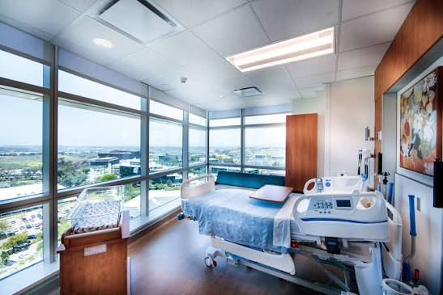

This demo showcases an AI-powered discovery interview agent built with ElevenLabs Conversational AI. The assistant conducts structured stakeholder interviews to understand healthcare operations, systems, pain points, data flows and opportunities for future AI enablement.
Identifies the main hospital workflows and understands how activities are performed today.
Captures systems, tools and communication channels used by hospital staff.
Detects bottlenecks, delays, duplicated effort, manual work and coordination challenges.
Highlights potential areas where AI or automation could improve operational efficiency.